|
|
New Quick fixes
for serial
version IDs
|
Two new Java quick fixes have been added to generate serial version
IDs for classes implementing java.io.Serializable:
- Add default serial version ID:
Inserts a serial version field with the value '1L'
- Add generated serial version ID:
Inserts a serial version field with a generated ID

|
|
|
Code formatter for J2SE 5.0 constructs |
The code formatter now supports all the new
J2SE 5.0 language constructs. Control over how the formatter handles them
are found on the Java > Code Style > Code Formatter
preference page:
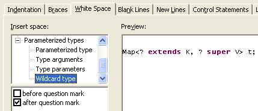
|
|
|
Convert to enhanced for loop |
A new Quick Fix (Ctrl+1) offers to
convert old-style for loops over arrays to J2SE 5.0 enhanced for loops:
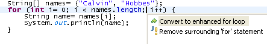
The Quick Fix simplifies the loop to:
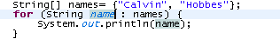
Note that you only see these things in Java projects with compliance
level 1.5.
|
|
|
Pull up/push down refactoring
|
Both the pull up and push down refactorings now
fully support generic types of J2SE 5.0. Formal type parameters are
automatically instantiated when pushing down a member to a class with
actual type parameters.
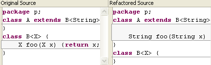
|
|
|
Rename refactoring
|
The Rename refactoring has been extended to
handle renaming of type parameters of J2SE 5.0. Additionally, occurrences
of types as actual type parameters are now updated as well.

|
|
|
New Quick Assists for conditional statements |
Several Quick Assists (Ctrl+1) have been added
for supporting manipulations of boolean expressions and conditional
statements.

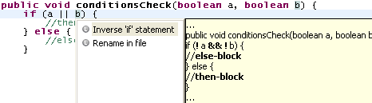
|
|
|
More quick assists
|
The Java editor has some new, advanced quick assists:
- Convert conditional expression (
? operator) to if-else
statement, or vice versa
- Invert a conditional expression
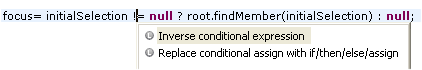
results in:
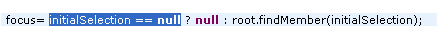
- Introduce a new local variable after an instanceof check
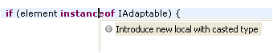
results in:

- Break out a substring literal

results in:

|
|
|
Changing multiple line-wrap settings at once
|
The Java code formatter page now lets you
change multiple line-wrap settings at once by multi-selecting in the tree
and then changing settings:
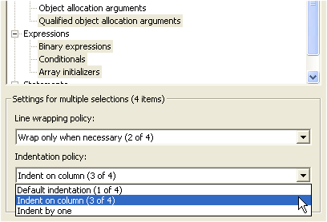
Code formatter settings are on the Java > Code Style > Code
Formatter preference page. |
|
|
Enumerations |
Enumerations can be created with a new Enum
wizard:
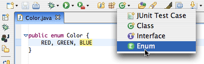
And the Rename refactoring now handles enum constants. |
|
|
Code assist uses static imports |
Code assist in the Java editor is now able to
process static imports when inferring context-sensitive completions.

|
|
|
Move member type refactoring |
The Refactor > Move Member Type to New
File command now supports generic types. Additionally, this
refactoring now automatically changes the visibility of referenced fields,
methods and types wherever necessary.
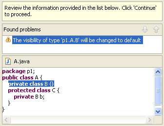 |
|
|
New refactoring: Augment Raw Container Clients
|
With J2SE 5.0, your code can use generics to
enhance readability and static type safety. Refactor > Augment Raw
Container Clients is a new refactoring that helps clients of the Java
Collections Framework to migrate their code.
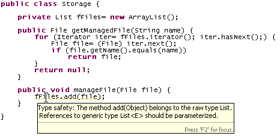
The refactoring infers type parameters for collection type references,
and will removes any unnecessary casts. It works on single compilation
units as well as on whole packages and Java projects.

Note: This refactoring must be turned on from the Java > Work in
Progress preference page. Currently, it only rewrites references to Collection
and its subtypes; support for Map will follow soon. |
|
|
Convert Anonymous Class to Nested refactoring |
The Refactor > Convert Anonymous Class to
Nested command now fully supports generic types.
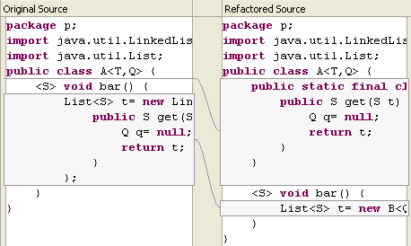 |
|
|
Move refactoring |
The Refactor > Move command has been
extended considerably to better support moving instance methods. New
features include:
- Support for generic types
- The option to create a delegate method for compatibility
- Unreferenced fields can now also be method targets

|
|
|
Improved Java properties file editor
|
The editors for Java property files now offer syntax
highlighting, improved double-clicking behavior, and a separate font
preference. The syntax highlighting colors are adjusted from the Java
> Properties File Editor preference page.

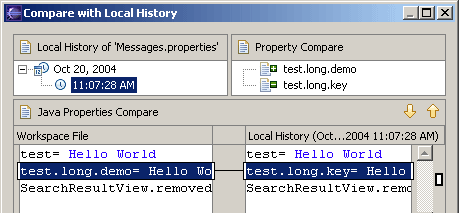 |
|
|
Working with externalized strings
|
When you linger over a key for an externalized string in the
Java editor, the associated externalized value is shown in a hover:

Ctrl+Click on it to navigate directly to the entry in the
corresponding Java properties file:
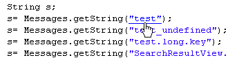 |
|
|
New quick fixes for J2SE 5.0
|
Support for the Javadoc tags for type
parameters has been added. In J2SE, you document type parameters using the
existing @param tag but with the name enclosed in angle brackets.

A new quick fix helps you changing the compliance settings when you try to
enter 5.0 constructs in a 1.4 project. Note that a 1.5 JRE is required
which has to be added in the 'Installed JRE's' preference page.
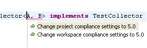
|
|
|
Organizing workspace with many projects
|
Use Show > Working Sets in the
Package Explorer's view menu to enable a new mode that shows working sets
as top level elements. This mode makes it much easier to manage workspaces
containing lots of projects.

Use Select Working Sets from the Package Explorer's view menu to
configure which working sets get shown. The dialog lets you create new
Java working sets, define which working sets are shown and in what order.
Working sets can also be rearranged directly in the Package Explorer using
drag and drop and copy/paste.
Note: Working set mode is still a work-in-progress. The set of
available actions on working sets isn't complete yet (for example build,
synchronize, ... are still missing). Additionally, it is an open issue as
to whether the concept of a History working set will stay.
|
|
|
New Occurrences Quick Menu
|
Pressing Ctrl+Shift+U
in the Java editor now opens a context menu with occurrences searches.
Note: Those who prefer the old behavior can reassign the above key
sequence to the "Search All Occurrences in File" command.
|
|
|
Spell checking in Properties File editor
|
Spell checking is now available in the
Properties File editor, and Quick Fix (Ctrl+1) can be used to fix
spelling problems:
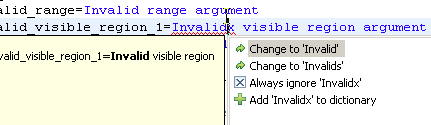
|
|
|
Navigate from property key in Properties File editor
to its references
|
Use Navigate > Open (F3) or Ctrl+click
to navigate from a property key in the Properties File editor back to
places in the code where the keys is referenced.

|
|
|
Rearranged Java editor preferences
|
Preferences set via the General > Editors > All Text Editors
preference page have been removed from the Java editor preference page.
The new page is now arranged in collapsible sections rather than the
previously used tab folder:
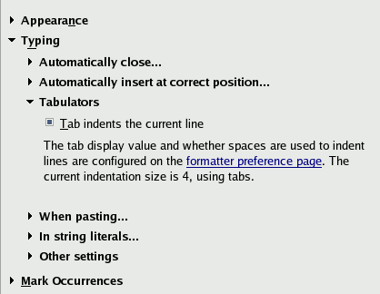
Note: If you had different preferences for the Java and Text editor,
you may have to revisit these preferences to find your optimal settings.
Also note that the visual tab length preference has been removed and is
now read from the active formatter profile.
|
|
|
New layout for Java preference pages
|
In an ongoing effort to improve our preference
pages, several pages have been reorganized. The various Java >
Compiler preference pages are now arranged in collapsible sections:

|
|
|
Project-specific code style settings
|
It's now possible to define code style settings
per project. Per-project settings are stored in the project where they
will be automatically shared by the team. The style setting include:
- Naming conventions (suffix and prefix for fields, parameters and
local variables)
- Code format settings
- Import order
Open the properties on a Java project to see the Java Code Style
pages. |
|
|
Source Actions
|
The source actions available in the Source
context menu now support all the features of J2SE 5.0:
- Override/Implement Methods supports generics and varargs in method
declarations
- Generate Getters and Setters works on fields of generic type as well
- Generate Delegate Methods has support for generics and varargs, and
handles methods from types occurring in type bounds as well
- Add Constructors from Superclass offers support for generics
- Generate Constructor using Fields offers support for generics

(More details on JDT UI's and JDT Text's Java 5.0 status for 3.1 M5 is
available here.)
|
|
|
Change Signature and other refactorings are
J2SE5-aware
|
Many refactorings have been improved to handle new J2SE 5.0 language
features. For example, Change Method Signature now allows editing methods
whose parameters are parameterized types:

Other refactorings that have been updated include Rename, Inline
Constant, Inline and Extract Method, Generalize Type, and Introduce
Factory.
|
|
|
Extract Interface refactoring
|
The extract interface refactoring has been
rewritten in order to provide full support for J2SE 5.0 and to better
respect code style preferences. New features include:
- Support for generic types and varargs of J2SE 5.0
- Full rewriting of existing method comments
- Full use of code templates during code generation

|
|
|
Static import groups
|
To organize your static imports, create groups for the
static imports and place them where you prefer. A new feature is to define
an 'others' group to collect up all imports not matched by any other
group:
The 'others' group feature is also available for non-static imports.
|
|
|
New quick fixes
|
For unresolved Java types, you now also get
proposals to create enums, annotations, and new type parameters:
|
|
|
New for loop template
|
The new foreach template
inserts a new 'for' loop into the code, proposing local Iterable
instances you may want to iterate over:
|
|
|
Autoboxing parameter proposals
|
Proposed parameters include auto(un-)boxing
proposals:

Note: Java > Editor > Code Assist > Advanced > Guess
filled argument names preference has to be enabled.
|
|
|
Improved source folder page for new Java project
wizard
|
An improved source folder configuration page in
the Java project creation wizard assists you in creating projects from
existing source. You can define source folder entries, include/exclude
folders directly on the tree, and test the results of your action right
away.
|
|
|
Build path menu in the Package Explorer
|
The context menu of the Java Package Explorer
has a new 'Build Path' menu entry, offering context-sensitive actions to
modify the build path of a Java project. You can add/remove new source
folders, archives and libraries, and include/exclude folders and files
from a source folder:

|
|
|
Tool tip description for Javadoc
|
Edit > Show Tooltip Description (F2) for Javadoc now uses the
SWT Browser widget.
|
|
|
New API to create code proposals like in the Java
editor |
Implementing an editor for a Java-like
language? You can now create code assist proposals similar to the ones
proposed in the Java editor. Instantiate CompletionProposalCollector
to get the same proposals as the Java editor, or subclass it to mix in
your own proposals. Use CompletionProposalLabelProvider to
get the images and labels right, and sort the proposals using CompletionProposalComparator.
Package: org.eclipse.jdt.ui.text.java in the org.eclipse.jdt.ui
plug-in. |
|
|
Navigate to project-specific settings
|
The preference pages for settings that are also configurable
on a per-project basis offer a link to the project specific preference
page.

|
|
|
Javadoc locations stored in the .classpath file
|
The Javadoc locations that are attached to JAR files and
class folders are now stored in the .classpath file so they can be shared
with the team. When M6 starts up, a background job will migrate all the
previously internally stored locations to the .classpath file.
The Javadoc locations are used by 'Open External Javadoc' (CTRL + F2)
and by the Javadoc wizard.
|
|
|
Use Supertype Where Possible refactoring |
The Use Supertype Where Possible refactoring
has been extended with a preference that specifies whether type
occurrences in instanceof expressions should be updated:
|
|
|
Infer Type Generic Arguments refactoring
|
The Infer Type Generic Arguments refactoring now offers two
configuration options:
When the first option is enabled, the refactoring assumes that
implementations of the clone() method return an object of the
same type as the receiver object. In the following example, the return
type of method cloneListeners() can then be inferred to be Vector<TestListener>,
which is better than just Vector<?> or Vector.
public class TestResult extends Object {
protected Vector fListeners;
public void addListener(TestListener listener) {
fListeners.addElement(listener);
}
private Vector cloneListeners() {
return (Vector)fListeners.clone();
}
}
The second option controls the behavior when no type arguments could be
inferred. In the previous example, if the refactoring is not allowed to
handle the clone() method specially, then it will just infer Vector<?>
as the return type of method cloneListeners(). If you don't
like unbounded wildcard types, you can opt to leave the type raw.
|
|
|
Externalize Strings wizards supports new message
bundles
|
The Externalize Strings wizard now supports the
new Eclipse message bundle approach (described in detail here):
|
|
|
New Eclipse default built-in formatter profile
|
Although Eclipse's default code formatter profile
is named Java Convention, formatting a file using this profile uses tabs
for indentation instead of spaces. A new profile named Eclipse has now been
added which now reflects what the default formatter options have been all
along, which uses tabs for indentation. To use true Java Convention settings,
simply switch the formatter profile to Java Conventions using Java >
Code Style > Formatter preference page. |
|
|
Refactoring Undo/Redo available from Edit menu
|
Refactoring Undo/Redo is now available from the Edit menu, and the separate
Refactor Undo/Redo actions have been removed from the global menu bar.
Additionally, refactoring Undo/Redo operations are now integrated with
Java editor Undo/Redo, resulting in a more transparent undo story in the
editor. For example, a refactoring triggered from within the editor is
now undoable in the editor by simply pressing Ctrl+Z.
|
|
New Type wizards support generics
|
The New Type wizards now support J2SE5 generic
types in various fields:
- The Name field can include type parameter declarations.
- The Superclass and the implemented Interfaces can include generic type arguments.

|
|
|
Parameter guessing for type parameters
|
Code Assist now inserts the correct type parameters
when completing a type in the Java editor. Type parameters that cannot be
disambiguated will be selected, and the Tab key will move from one
parameter to the next.
In this example String is inserted as the first type parameter, while Number is proposed for the second:
To try out this feature, you need to enable Fill argument names on the Java > Editor > Code Assist preference page.
|
|
|
Mixed indentation settings
|
The Java formatter preferences now allows the
tab size to be configured independently from the indentation size (see the
Indentation tab in your formatter profile):
For example, set Tab size to 8 and Indentation size
to 4 to indent your source with four spaces. If you set the Tab policy
to Mixed, every two indentation units will be replaced by a tab
character.
Formatter profiles can be configured on the Java > Code Style > Formatter preference page.
|
|
|
Improved completion on empty word |
Java code completion on an empty word no longer
automatically proposes all types visible at the completion location. You
have to type the first character of the type to get a completion proposal.
|
|
|
Completion inside annotations |
Code completion inside a J2SE 5.0 single member
annotation or annotation attribute value is now supported.

|
|
|
Support for Javadoc inside package-info.java |
Doc comments inside the package-info.java (the
J2SE 5.0 replacement for package.html) are now processed, and the syntax
and references in standard comment tags are verified.
|
|
|
Class file naming change for local inner types |
In 5.0 compliance mode, the Java compiler now
generates class files that follow the naming convention specified in JLS
13.1 (3rd edition) for local inner types. As a consequence, instead of generating
a file named X$1$A.class, it will simply be X$1A.class.
|
|


{kind=link}